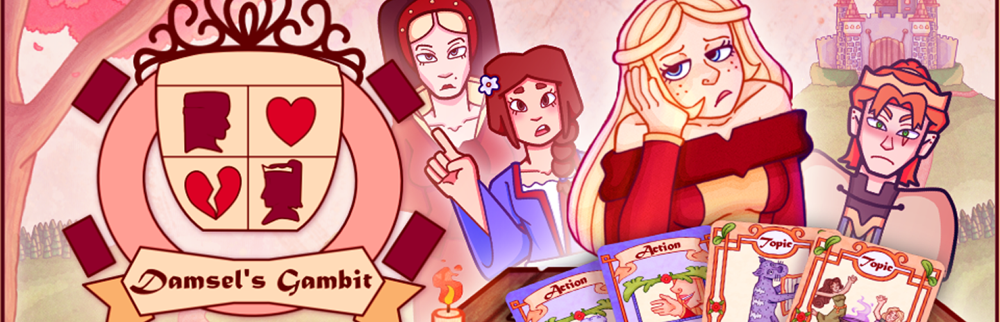
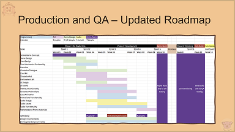
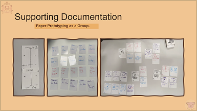
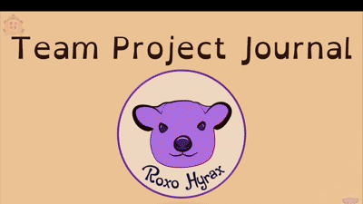

Project Overview
Damsel’s Gambit is a 2D card game and dating sim in reverse; you’ll step into the shoes of Princess Penelope, a medieval princess who does not wish to be wed, and outplay the suitors eager to win your hand.
During the date with your suitor, you’ll play Action and Topic cards to guide the conversation, gain information and affect his opinion of you. Play your cards wrong and you may find yourself stuck in a loveless marriage or at war with his kingdom!
Gameplay Video
Production
My primary responsibility throughout the project was to support the team in maintaining a manageable scope, ensuring clear communication, and making consistent progress towards the project milestones, while also managing regular communication with the client. I also played a key role in writing the character dialogue, working to ensure that the dialogue was consistent with the characters and overall direction of the project.
Project Timeline
- Ideation
- Pre-production
- Production
- Polishing
- Week 1
- Functional PrototypeWeek 6
- Alpha BuildWeek 10
- Beta BuildWeek 12
- Gold MasterWeek 14
Team and Project Management
- Project’s roadmap, and defined the scope and minimal viable product with the team.
- I used Jira to create the project backlog and assign tasks.
- Organised and planned team meetings.
- I was involved in the initial concept development, assisting the designers to determine key features and doing scope assessment.
- Successfully onboarded a team member mid development.
- Kept track of the game’s progress by regularly updating the Project Journal.
Client Communications
- Took charge of team correspondences with the tutor and client via email.
- Prepared the presentation slides for the bi-weekly client meetings.
Other Contributions
- Wrote the game’s dialogue in collaboration with Thorn Stirling and Caitlyn Johnstone.


